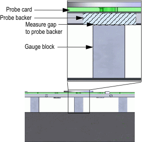
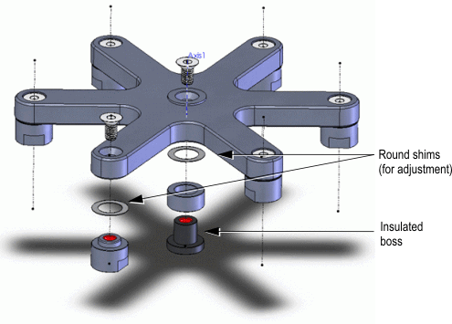

Adjusting the planarity of the floating probe backer assembly
This topic describes how to measure and to adjust the planarity of the Direct Probe probe backer assembly per specification drawing.
About this task
In most cases, the method implements the use of readily available mechanical measurement tools.
All subsequent planarity adjustments to the probe backer assembly, such as adjusting the probe head planarity, should be made in reference to datum A (4x contact tabs) of the probe card assembly and of the probe backer.
Measurement and adjustment of the probe backer assembly is recommended when any potential mechanical variation is possible, such as replacing the PCB, shipping, etc.
In this topic the following tools are used.
Granite table:
- Minimum working area: 457.2 mm x 304.8 mm
- Inspection grade +/- 1 mil (0.00254 mm) unilateral tolerance
Rectangular gauge block:
- Minimum quantity: 5
- Grade ASME 0
- NIST traceable
Thickness gauge:
- Minimum thickness: 1 mil (0.0254 mm)
Before you begin
Make sure that you already adjusted the planarity of the probe card assembly according to the description in Measuring and adjusting the planarity of a probe card assembly.
Procedures
Measuring the planarity
- On the granite table, adjust the gauge blocks.
If available use a gauge block fixture, see note above.
 Note Advantest recommends using a fixture plate to hold the gauge blocks in place, see drawings for N2360-21605 in Direct-Probe probe card layout information and Direct-Probe stiffener.
Note Advantest recommends using a fixture plate to hold the gauge blocks in place, see drawings for N2360-21605 in Direct-Probe probe card layout information and Direct-Probe stiffener. - Place the probe card/stiffener assembly onto the gauge blocks so that the contact tabs on
the stiffener frame rests on the gauge blocks.

- Measure the gap, if any between the top of the probe backer and the gauge block using the
thickness gauge.

- If adjustment is required, proceed as described below.
Adjusting the probe backer height and planarity
- Note the gap measurement result using the thickness gauge.
- Remove the probe backer frame from the probe backer standoffs.
- Choose the appropriate thickness of the round shims depending on the gap measurement.
- Add the shims between the probe backer standoffs / insulated boss and the probe backer frame.

- Remount the probe backer frame.
- Re-measure the height of the top of the probe-backer with respect to datum A, as described in Measuring and adjusting the planarity of a probe card assembly.
Functional changes
- Introduced in SmarTest 6.5.4